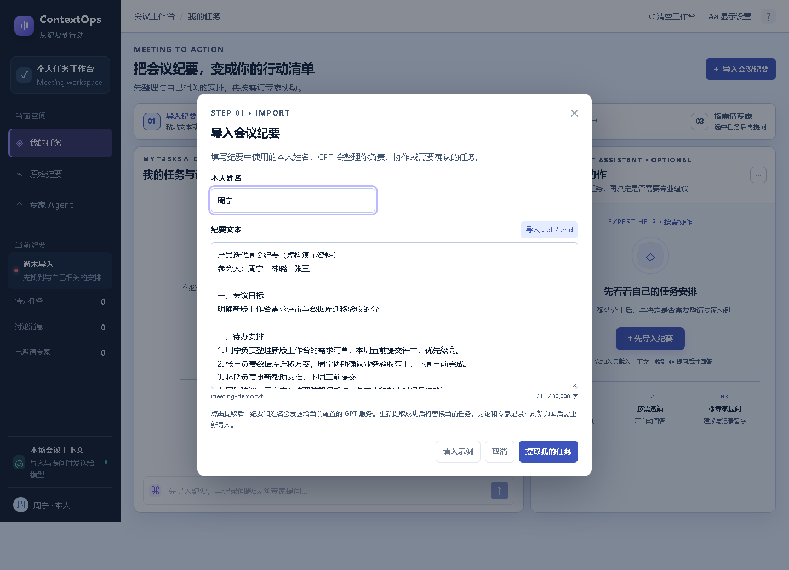
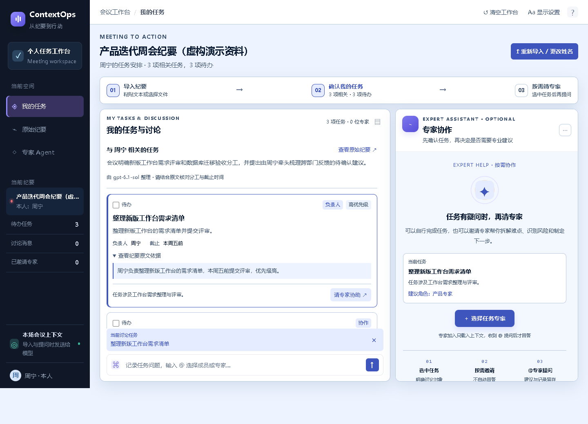
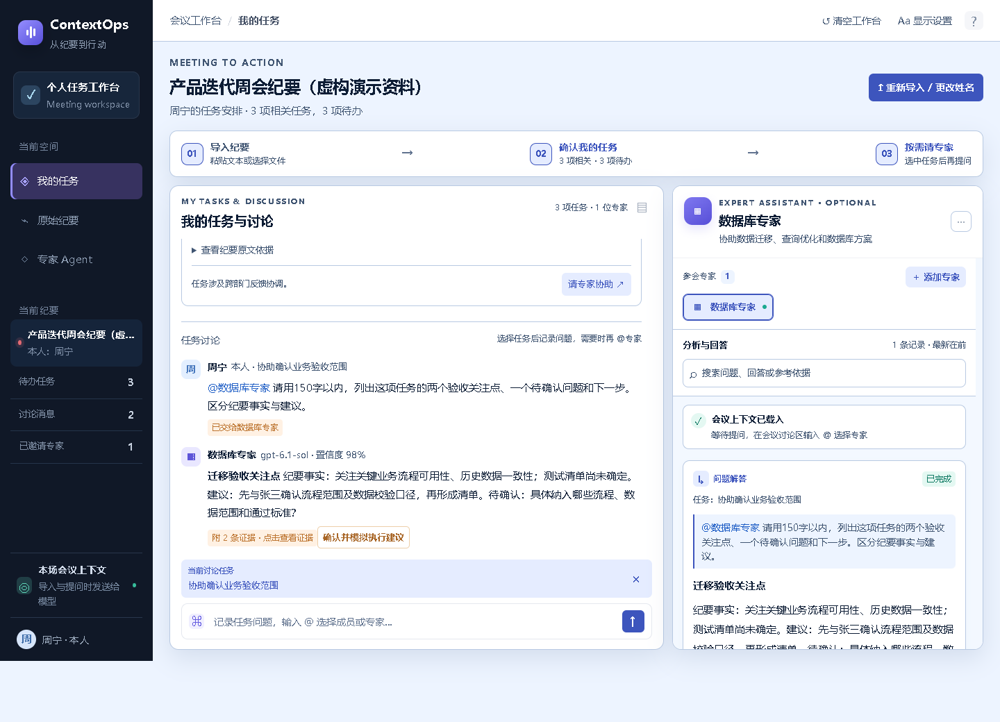
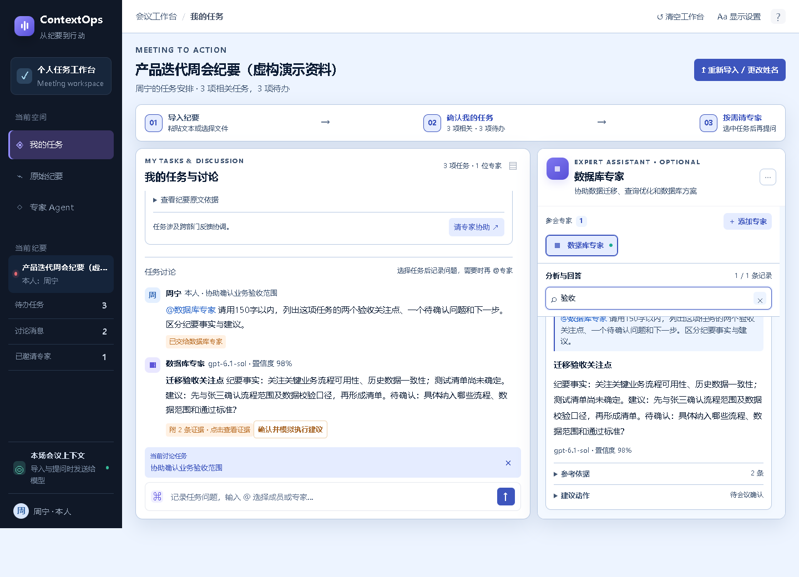

龚志球 · 曹琬廑 · 喻林
ContextOps · 会后任务专家助手
导入会议纪要 → 确认我的任务 → 按需邀请专家 → @ 提问与分析记录
操作演示
无旁白字幕录屏；使用虚构纪要，真实请求配置的模型服务。文件应保持在同一目录。主要界面




本地运行：在源码目录执行 python -u server.py 后访问 http://localhost:5175。评审需先配置模型密钥，完整步骤见 代码与运行说明。